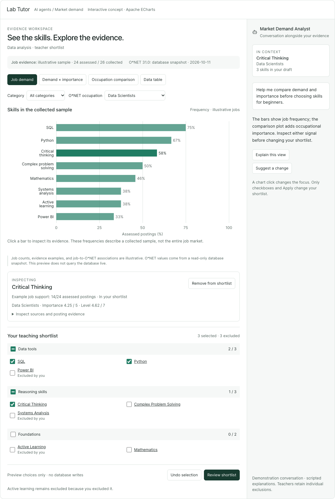
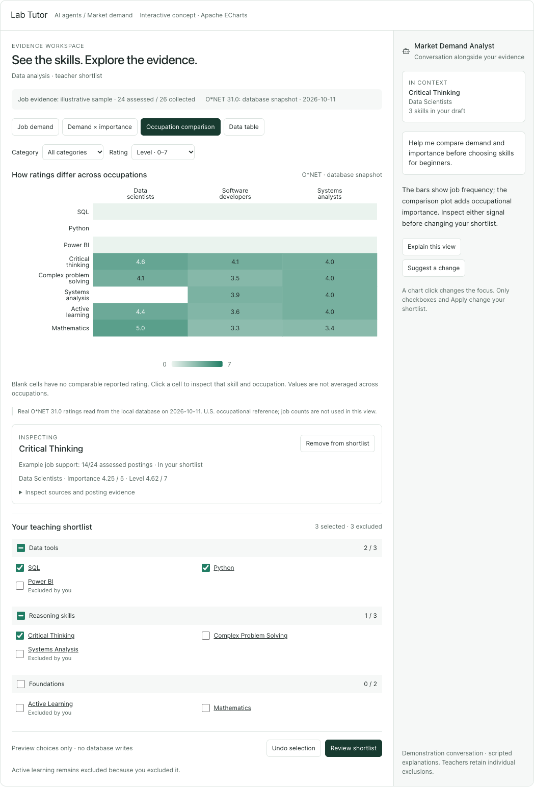

The agreed outcome
A teacher can understand which skills are supported by job postings, inspect how O*NET rates relevant competencies, discuss the evidence with the agent, and choose categories or individual skills with confidence.
Simplicity is the design rule. Start with one useful overview. Surface at most two clear patterns. Reveal detailed comparisons, evidence and operational activity when needed.
Where this belongs
The existing Market Demand Analyst workspace at /courses/:id/market-analyst, opened from the course’s agents hub.
This is the page running the Supervisor, Skill Finder, Curriculum Mapper, Skill Cleaner and Concept Linker swarm. The scope is this workspace and its entry point, rather than a redesign of every agent application.
Assumption carried from the approved concept: “swarm agents page” refers to this existing market-analysis workspace.
Every skill published for students still needs a stored, qualifying job-posting link and supporting evidence. O*NET supplies occupational context; it does not replace job evidence. Existing learning paths, resources, student APIs and quiz-based mastery remain compatible.
Why this approach
Chosen: reshape the existing workspace around its durable review data and reuse its source, selection and approval services. This gives charts and chat a shared state without creating a second approval system.
Alternative: place charts inside the existing narrow side panel. That leaves evidence secondary and provides insufficient comparison space.
Alternative: build a new dashboard and conversation system for all agents. That adds unrelated routes, state and migration work before the teacher’s skill-selection problem is solved.
1. The teacher’s experience
- Set the questionChoose the market and available job sources. Optionally add O*NET occupations. Before collecting, show the source choices and expected action clearly.
- Explore the evidenceOpen a saved analysis directly. The default Overview shows sample-frequency bars, coverage and up to two useful patterns. Categories and search narrow the skills shown.
- Discuss and chooseClick a chart mark to inspect its evidence. Ask the agent a contextual question. Select a whole category, then exclude individual skills. Suggestions are visible proposals.
- Review before publishingSave the shortlist, confirm it for mapping, inspect the exact curriculum mappings and evidence, then approve integration. Each stage explains what happens next.
Layout and progressive detail
- Main area: Overview, Compare and Data views; focused-skill evidence; collapsible category shortlist; the current teacher checkpoint. Before skills exist, preserve the existing search-query and job-group confirmation cards here. Their explicit confirmations use workflow mode, so evidence-question mode cannot strand the analysis.
- Right conversation: a compact context chip, readable conversation, one-line real activity status, expandable activity details and a reachable composer.
- Controls: only category/search and controls relevant to the active chart. Source configuration collapses to a summary once an analysis starts. Collection settings and display filters are visibly different.
- Desktop: show both panes when the workspace has at least 1,000 CSS pixels available, accounting for the app sidebar. Default chat width 360px; remaining width belongs to evidence. Main content and transcript can scroll independently.
- Narrow screens: use Workspace / Conversation views with a clear unread-response indicator. Preserve the draft, focus, filters, composer and attached context when switching. Chat must remain reachable.
- Attention: stream events do not switch chart tabs, open panels or move the teacher’s scroll position. New replies follow the transcript only while the teacher is already at its bottom.


2. Charts that answer useful questions
| View | Teacher question | Required behavior |
|---|---|---|
| Overview · demand bars | Which skills appear most often in this collected sample? | Horizontal bars on a fixed 0–100% scale, with supporting / assessed counts. Show the top 12 matching skills and the total count; “View all” opens the filtered Data view. Zero assessed postings means unavailable. |
| Compare · demand and importance | How do job frequency and occupational importance relate? | X = sample frequency; Y = O*NET Importance, 1–5, for one explicitly chosen occupation. No combined score or average across occupations. Unrated or ambiguous candidates remain inspectable in Data and the shortlist. |
| Compare · occupations | Which competencies matter differently across the roles I selected? | Skills × confirmed occupations; switch Importance (1–5) / Level (0–7). Up to five occupations. Show 12 skill rows per page with a visible row range. Each cell has its own provenance. Missing and suppressed values are unavailable, never zero. |
| Data · accessible table | What exact values and evidence support this? | Full filtered candidate list, paged 25 rows, sortable by name, frequency or the chosen reported rating. Keyboard-operable Inspect and selection controls; missing values sort last in either direction. No information exists only in a tooltip. |
Chart clicks focus the skill and evidence; they never select, save or approve it. Changing occupations updates only occupational context. Category/search filters change the visible rows, not posting denominators, source configuration or shortlist membership.
Patterns worth inspecting
Show at most two concise observations, computed from the displayed data scope. Each card includes exact values, sample or occupation context, a coverage qualifier and Inspect evidence. Ask agent stages a contextual question. Do not generate decorative insights when the data does not qualify.
| Pattern | Example wording | Eligibility |
|---|---|---|
| Common in this sample | “These skills appear in at least half of the assessed postings.” | At least 10 assessed postings; same assessed denominator; each highlighted skill has at least 3 supporting postings and frequency ≥50%. Show up to 3 skills with separate counts. Never add percentages together. |
| Importance differs by occupation | “This competency is rated differently for these two occupations.” | The same O*NET descriptor and release, at least two confirmed occupations, valid reported IM values, and a difference ≥1.0 on the 1–5 scale. Show both values and occupation names. |
| Important across selected roles | “This competency has importance of at least 4/5 in every selected occupation.” | At least two confirmed occupations; the same descriptor; a valid reported IM value ≥4 for every compared occupation. No missing or ambiguous cell. |
Selection order: common-in-sample first, largest occupation difference second; use the shared-importance observation if the second is unavailable. Ties use stable label/ID ordering. Avoid repeating the same skill in two cards. Thresholds are product display rules, not statistical significance. Partial samples stay explicitly qualified. Show no “growing demand”, causal claim, skill co-occurrence, or market-wide estimate from a single collection.
Exact rating and chart rules
- Use server-supplied
job_metrics; supporting and assessed identities are deduplicated by the backend. Filtering skills does not recompute the denominator. Do not sum skill counts into category job totals. - Plot an O*NET metric only if status is
reported, value is finite and inside its declared scale, release matches the analysis, and the candidate association isequivalent. “Broader” and “related” remain contextual references. - Deduplicate the same immutable evidence ID. Multiple distinct equivalent descriptors for a candidate/occupation are ambiguous: show “Multiple matched descriptors” and require a descriptor choice before plotting one number. Never take first, maximum or mean. For occupation comparisons and pattern rules, descriptor identity means the same
(release, family, element_id); occupation-specific evidence UUIDs are expected to differ. Allow at most one chosen evidence row per candidate/occupation, with a consistent descriptor identity across comparison cells. - Keep missing, suppressed, not relevant, no association and ambiguous states distinguishable in the inspector. A suppressed numeric value in the database must never appear as a plotted value.
- Software-reference flags are categorical annotations, not importance or level. Do not assign Programming’s rating to Python or SQL merely because they are related.
- Overview top-12 truncation and heatmap pagination are display choices; pattern rules evaluate all matching candidates, not just the visible page. Zero confirmed occupations means an empty occupational comparison with an optional reference-exploration action. One confirmed occupation permits a single-role reference view. If another confirmed occupation is merely hidden, let the teacher display it immediately. Adding an occupation outside the locked run’s confirmed set requires a new analysis; browsing its reference data remains available separately.
- Every plot has labeled scales, direct values or accessible equivalents, readable dark/light themes, and non-color cues. Resizing never clips axis labels. A chart error leaves the table, evidence and shortlist usable.
3. One shortlist, with teacher control
One page-scoped review controller owns the saved review and local draft. Charts, category checkboxes, evidence controls, proposal cards and the footer all read that same state.
- Selecting a category includes all its current members, including members hidden by search. Display the total, visible and selected counts. Individual checkboxes can exclude any member and produce the mixed category state.
- New candidates remain unselected. Removed or merged candidates trigger reconciliation; selections never transfer to replacements without review. Same-run refreshes preserve valid unsaved choices.
- Apply to draft is local; Save draft persists using the existing run/candidate/selection revision contract. Undo restores the previous local selection operation. An explicit teacher re-check can remove an exclusion; an agent proposal cannot.
- A dirty draft has a visible unsaved indicator and navigation guard. If server revisions changed, preserve valid local choices, show what changed and require review before the next save. Do not silently overwrite another tab’s decisions.
- Review mappings saves any dirty draft first, then invokes selection confirmation only after save succeeds. It does not publish. Final Approve integration uses the exact reviewed mapping, revisions and digest.
- Skills without qualifying posting evidence are visibly marked Needs job evidence. They may be inspected or saved as an incomplete draft. The authoritative backend job-evidence gate is final integration approval, which rejects missing qualifying evidence with
422 missing_job_evidence. Selection confirmation itself validates shortlist and reconciliation state, not posting support; this spec does not add an earlier server gate. The default demand chart does not imply unsupported skills have job evidence.
4. An agent that understands the current view
The teacher can ask naturally, such as “Why is this useful?”, “How do these occupations differ?” or “Suggest a manageable starting set.” The agent receives the actual evidence behind the current context.
- Visible context: “Critical Thinking · Data Scientists · current analysis” appears above the composer. “Ask about this skill/chart” prefills an editable question. The teacher can remove the focused-skill attachment; the turn remains an evidence question, not a workflow command.
- Deliberate sending: chart clicks, filters and hovers do not invoke the model. Send freezes the attached context; later chart navigation does not change an in-flight question.
- Evidence explanations: ordinary questions after review is available use an enforced inspection-only path. The model can read the validated evidence bundle, but cannot collect jobs, run extraction, edit configuration, map, publish or delete.
- Suggestions: “Suggest skills” can create an immutable proposal with reasons and evidence. With unsaved changes, show Save draft and suggest as an explicit action. Apply changes only after teacher review; stale proposals cannot be applied.
- Workflow actions: start/retry collection and continue mapping remain explicit, stage-specific controls. Free text needed during setup or an active workflow uses the existing swarm path and clearly shows the current activity.
- Readable activity: show current agent and real task status in one line. Tool arguments/results are expandable. Report stages and source outcomes, not invented percentage progress or model chain-of-thought.
- Recovery: restore saved conversation and review coherently. Retain a recoverable failed question. Offer refresh and explicit retry; never automatically replay a workflow or proposal that may have already executed.
Honest interruption: the current backend continues managed work after a browser disconnect. This release uses “Close live response”, explains that work may continue, and refreshes status/results. It does not promise server cancellation.
The interaction policy follows user control and clear consequences in Google PAIR’s Feedback + Control guidance. These are design decisions for Lab Tutor; the source does not prescribe this specific layout.
5. Real data, including when nothing exists yet
PostgreSQL is authoritative. The browser reads authenticated course-scoped APIs. It never connects directly to the database, receives provider credentials, or invents fallback values. Neo4j remains the existing published graph projection.
Current local baseline
The read-only audit on 11 October 2026 found O*NET 31.0 with 1,016 occupations and 63,671 evidence rows, and no durable market-analysis runs or vacancy snapshots. This is an observed local baseline, not a production guarantee.
The prototype used a real O*NET snapshot and explicitly illustrative job counts. None of those sample counts or scripted replies will enter the production feature.
- No saved analysis: show “Start an analysis” with source setup; no fake bars or zero-valued demand. A secondary “Explore O*NET occupations” action can read the existing reference APIs without creating a market run. Reference exploration has no publish/shortlist authority.
- Ready analysis: load saved candidates, evidence, coverage, source outcomes and teacher choices. Restore the latest active analysis for that course/teacher. A run-history browser is outside this release.
- Partial collection: keep useful data available with a clear assessed/selected coverage summary and source-level details. Existing “Continue with available evidence” acknowledgement remains required before advancing when applicable.
- Retry collection: accurately describe that current behavior retries all configured providers and invalidates extraction metrics until reassessment. Preserve explicit provider choices; never silently add a fallback provider.
- Original evidence: inspector shows original posting URL, title, company, source, matched phrase/excerpt, retrieval time and availability status. Load full snapshot details on demand. Display stored descriptions safely as text; retain available full safe payloads in the backend.
- Unavailable posting: retain provenance and explain archived/purged status. Do not fabricate excerpts or bypass the existing qualifying-evidence rules. A URL is a stored source link, not a guarantee that the external page is still available.
6. Technical specification
These are boundaries and required behavior, not an implementation task sequence. The implementation plan will be written after this specification is approved.
A. Frontend responsibilities and scope
Keep the feature under frontend/src/features/market-demand/. Reuse useAgentStream, existing message components, selection.ts, the evidence inspector and integration-review rules. Replace the duplicated legacy results sidebar with the chart/review workspace.
| Responsibility | Boundary |
|---|---|
| Workspace page | Course routing, source setup, responsive panes and stage-specific actions. |
| Review controller | Authoritative snapshot, one local selected/excluded draft, undo, reconciliation acknowledgements, save/confirm state, chart focus/filter/occupation and explicit descriptor choice. |
| Chart data selectors | Pure normalization, rating eligibility, ambiguity handling, sorting, view datasets and deterministic pattern eligibility. Never fetch or mutate. |
| ECharts adapter | Initialize once per mounted chart, update datasets/options, map mark IDs to focus callbacks, resize on container changes and dispose listeners/instances. No business selection state inside ECharts. |
| Conversation controller | Restoration, stream events, visible frozen context attachment, composer text, proposal actions and detached/unknown execution state. |
| Feature API wrapper | All new HTTP requests and typed DTOs; explicit abort/course/run generation guards prevent late responses from crossing contexts. |
Add ECharts only for this feature via the frontend container, with a pinned lockfile. Bundle the required chart types/components through echarts/core; no CDN runtime dependency and no broad Recharts migration. Lazy-load comparison views. Use existing Shadcn primitives, @/ imports, Tailwind v4 / cn(), and react-hook-form + zod for forms.
ECharts modular registration, explicit accessibility support and container resize/disposal follow the official import guidance, accessibility guidance and container sizing guidance. A keyboard table is still required; chart ARIA descriptions alone do not make every mark keyboard-operable.
Persist saved selections through the existing API. Store optional view preferences only under a user/course/run key in session storage; do not store credentials, source bodies or unsaved authoritative decisions there. Course or run switches clear incompatible focus and draft state. Chart refreshes never erase valid edits.
B. Existing and extended API contracts
All paths below are relative to the existing API root and require the authenticated teacher to own the course.
| Contract | Decision |
|---|---|
GET /courses/{id}/market-demand/skill-review | Continue as the authoritative review source. Add optional analysis_metadata, derived from the same SQL run: country, configured providers/evidence sources, pinned O*NET release/occupations, created/updated timestamps. Null when no active run. Do not read chart metrics from legacy chat state. |
GET …/skill-review/postings/{snapshot_id} | Reuse for owned, lazy-loaded evidence. IDs from candidate references only; server validates ownership. |
GET …/occupation-reference/releasesGET …/occupation-reference/occupationsGET …/occupation-reference/occupations/{soc}/skills | Reuse for release/occupation discovery and clearly labeled reference exploration. Run comparisons stay pinned to configured occupations/release. |
| Existing draft, selection-confirmation, omission-acknowledgement and integration-approval APIs | Reuse revision/digest protections and job-evidence gates. No new path bypasses them. |
POST /courses/{id}/market-demand/chat | Optional typed workspace_context selects enforced explanation/proposal behavior. Omitted context preserves the existing workflow contract for older clients. The new UI always sends at least minimal run context with intent:"explain" for ordinary review questions, even after removing a focus chip. Only explicit workflow actions use the legacy path. New contextual requests do not run source configuration. |
GET /courses/{id}/market-demand/execution-status new | Return {status: "busy" | "idle", state_updated_at: string | null} from the cross-process PostgreSQL lease/state mechanism. Do not infer idle from one process’s memory. A read must not acquire a workflow lease. Request failure is “status unknown” in the UI. |
The added metadata shape is {country: string | null, job_sources: JobSource[], evidence_sources: EvidenceSource[], onet_release: string | null, occupations: {soc_code: string, title: string}[], created_at: ISODateTime, updated_at: ISODateTime}. Values come from the same run as the review; missing legacy metadata is explicit, never substituted from a different run.
No new analytics database or proposed SQL schema migration is needed. Compute metadata from MarketAnalysisRun; use existing thread checkpoint/message metadata to retain contextual-turn information. SQL reads stay in repositories, orchestration in services and dependencies are injected with Depends().
The status endpoint observes the current database’s granted conversation advisory lock through a read-only pg_locks query matching the bigint hash key and objsubid=1. Do not probe with pg_try_advisory_lock or process-local lease maps. Idle means only that no granted lease was observed at that instant. It is not proof of completion or success; state_updated_at is the latest SQL state save, not a terminal outcome. Later mutations must still acquire their existing lease.
After detachment or restoration, query execution status and refresh review/history. While busy and the page is visible, poll at 2 seconds, backing off to 10 seconds after 30 seconds; stop on idle, course change, unmount or hidden page. Refresh on visibility return. If reconciliation provides no terminal result, retain “Outcome unknown” even when idle. On status failure, expose Retry status and let existing server 409 protections remain authoritative; never advertise successful cancellation.
C. Context attached to an agent question
Run context is an optional discriminated object on the existing chat request. The following describes the complete first-release contract:
{
"kind": "run_review",
"version": 1,
"intent": "explain" | "propose_selection",
"run_id": "UUID",
"expected_candidate_revision": 4,
"expected_selection_revision": 2,
"view": "overview" | "demand_importance" | "occupations" | "data",
"focused_candidate_id": "UUID or null",
"candidate_ids": ["up to 20 explicitly focused/compared IDs"],
"filters": {"category_ids": [], "search": "", "scope": "all" | "selected"},
"occupation_codes": ["up to 5 configured SOC codes"],
"metric": "frequency" | "IM" | "LV",
"descriptor_choices": [{"candidate_id": "UUID", "evidence_id": "UUID"}],
"insight_kind": null | "common_sample" | "occupation_difference" | "shared_importance",
"has_unsaved_changes": false
}
candidate_ids identifies explicit focus, not the entire filtered dataset. The server resolves filters against its owned snapshot, computes the matching count and attaches bounded evidence. The UI never sends values, chart labels, URLs, HTML or excerpts as authoritative evidence.
Explanation and dirty drafts: explain the evidence without requiring a save. When changes are unsaved, show “Unsaved shortlist changes are not included”; the model must not claim it has the teacher’s current local choices. A selected-only visual filter follows the local draft. For an attached agent question, filters.scope="selected" uses saved selection and is unavailable until a dirty draft is saved. The Data view exposes this optional filter; Overview remains uncluttered. Proposal: requires a saved revision; Save draft and suggest sends only after the save succeeds.
Reference-only questions use {kind:"occupation_reference", version:1, intent:"explain", release, occupation_codes, element_ids, metric}. They validate ready release, occupations and descriptors, never create a market run, and cannot propose publishable skills.
- Bounds: message ≤8,000 characters; serialized context ≤16 KiB; explicit candidates ≤20; categories ≤10; occupations ≤5; descriptor choices ≤20; reference element IDs ≤20; search ≤120 characters. Reject oversized or unknown fields instead of truncating choices silently.
- Resolve owned course and active run, then exact revisions. A foreign/inaccessible run or evidence returns 404; a stale snapshot returns structured
409 context_stale; invalid filters/metrics/IDs return 422. Reject before calling the model. UI retains the question and offers Refresh context. - Validate each evidence ID against candidate membership, occupation and pinned release. Allow one descriptor choice per candidate/occupation; occupation comparison requires the same
(release, family, element_id)across cells, not identical evidence UUIDs. Pattern questions are recomputed from authoritative facts and the named rule. Client pattern labels confer no truth or authority. - Evidence bundle ≤24 KiB: exact source facts, included/omitted counts, coverage, release/scale and source references. At most two 600-character excerpts per focused candidate. Apply the byte budget deterministically; never cut JSON mid-field. Disclose omitted context.
- Treat posting/source text as data. Enforce read-only or proposal-only tool permissions in runtime code; prompt wording is not sufficient. Proposal turns can invoke only the existing immutable proposal write in addition to reads.
- Store context IDs, labels, numerical facts, revisions, inclusion counts and notices with their conversation turn, but never copy source bodies or excerpts into contextual-turn metadata. Re-resolve source evidence when inspected and mark removed or purged sources as unavailable. This preserves the existing snapshot redaction boundary. Do not inherit context as a sticky “current chart” for later turns. Restored context chips describe what the model received at that time.
- Add an SSE
context_resolvedevent with turn message ID, labels, run/revisions or reference release, occupations/metric, included/omitted counts and unsaved-draft notice. Extend typed history messages with optional matching context metadata.
All contextual turns reuse the existing conversation serialization/lease so history remains ordered. Discussion cannot run concurrently with a still-busy workflow on the same conversation; explain the waiting state without discarding the staged question.
D. Stream, proposal and failure semantics
- Add a sanitized SSE
errorevent with a stable code, user-readable message and recovery hint. Emit terminalstream_endwithoutcome:"completed"|"failed". Older clients can ignore added fields. - Do not call a tool or source successful solely because it returned a string. Tool progress may say “finished”; source success/failure comes from saved
source_outcomes. Exceptions and incomplete streams must remain visible. - Close live response detaches the client stream, retains partial transcript and displays execution status. Never automatically resend after an uncertain disconnect. Refresh first; allow an explicit new explanation or proposal using current revisions.
- A proposal records candidate and base selection revisions. Apply is disabled if either differs from the active saved review. Applying a reviewed diff changes the local draft only. Save still performs server revision validation. Protected exclusions are retained.
- Consolidate conflicting legacy prompt instructions: frequency refers to a collected sample; retry is possible with reassessment; saved selection and publication are teacher API actions. Recommendations cite verified evidence, disclose limitations and discuss learning fit without claiming job frequency alone determines pedagogy.
- Publication, source configuration, mapping and deletion stay outside contextual explanation/proposal permissions. A question such as “collect more jobs” in inspection mode should point to the explicit workflow action rather than execute it.
E. Pattern computation, metadata and freshness
The frontend derives pattern cards from the same normalized, eligible chart data; no extra LLM call is required to generate them. The backend re-evaluates an attached pattern request against the corresponding saved facts before explaining it. Test fixtures cover parity of the named rules.
Each observation records its rule, candidate IDs, descriptor/occupation IDs where relevant, exact values/denominators, run/revisions, release and current filter scope. Formatting may shorten labels but not precision in the inspector. No unsupported narrative is persisted as a new market fact.
Refresh the authoritative review on skill_review_changed, completed/detached turn reconciliation and explicit teacher refresh. History, configuration and review must refer to the same active run before editing resumes. Late results from a previous course, run, reference request or occupation are ignored. A new review invalidates stale proposal eligibility, focused IDs that disappeared, and cached chart/pattern results while retaining valid local edits.
Reference browsing is separate from a run’s confirmed occupation set. Browsing another role does not change collection configuration. To change locked sources, market, release or occupations, add a clear New analysis action reusing the existing confirmed DELETE …/history reset. Its confirmation explains that it clears the conversation and active analysis from this workspace, retains stored run/evidence/approval records and published student offerings, and offers Save draft, Discard draft or Cancel if edits are unsaved. There is no first-release browser for reopening older runs. Disable reset while known busy; handle server 409 without losing the current view. Clear local review, conversation and configuration only after acknowledged reset success, then show setup; the next explicit start creates the new run. Because SQL state deletion precedes checkpoint deletion, other failures can represent a partial reset. Retain recoverable input and reconcile status/history/review before another mutation; do not blindly restore or replay the former run.
7. What must be demonstrated before completion
| ID | Scenario | Required evidence |
|---|---|---|
| A1 | Open from the agents hub and a direct URL | Both reach the same chart-first market workspace for the correct course. Existing agent entry points still work. |
| A2 | Empty and database-backed states | No mock fallback; genuine empty demand state. Saved analysis reload reproduces the SQL counts, original links and shortlist. Reference-only browsing uses real imported O*NET data. |
| A3 | Charts and exact values | Demand counts/denominators, scatter coordinates and heatmap cells match the same fixture/API facts. Duplicate posting references do not inflate counts. Unavailable metrics never become zero. |
| A4 | Patterns | Rules show only eligible observations; include ties, fewer than 10 assessed postings, partial coverage, mixed denominators, missing ratings, occupation differences and no qualifying pattern. Server explanation resolves the same facts. |
| A5 | Focus versus selection | Click/filter/page/occupation changes issue no chat POST, collection or selection write. Shared category/individual controls, exclusions, undo and counts stay consistent. |
| A6 | Refresh, revisions and reconciliation | Valid unsaved choices survive same-run refresh; stale saves/proposals are rejected; merged/new candidates are never silently selected. Course/run switching ignores late responses. |
| A7 | Contextual agent behavior | Visible attachment equals the server-resolved bundle. Explain cannot call mutating tools. Proposal may save only a proposal. Dirty draft requires explicit Save and suggest. Foreign/stale/oversized context is rejected before an LLM call. |
| A8 | Evidence and trust | Original posting links/excerpts are inspectable. Suppressed ratings, multiple equivalent descriptors and related-only/software references are handled correctly. Source text cannot expand tool permissions. |
| A9 | Failure and detachment | Source error, partial extraction, failed stream, unknown execution status and cross-process busy lease are visible. Idle never implies success. Close live response does not claim cancellation; retry never duplicates work automatically. A failed New analysis reset preserves the current workspace; successful reset preserves durable evidence and published offerings. |
| A10 | Teacher approval and student regression | Search-query and job-group confirmations still advance the workflow. Missing job evidence blocks final integration approval at the existing server gate. Exact mapping/digest approval is preserved. Saved student paths, resources, APIs and quiz mastery remain usable. |
| A11 | Responsive and accessible UI | Headless tests at 1440, 1024, 768, 390 and 320px, with the app sidebar represented. Keyboard table supports equivalent inspection/selection; focus, composer and draft survive Workspace/Conversation switching. Light/dark labels and tooltips remain readable. |
| A12 | Chart lifecycle and ordinary usage | Repeated tab/resize/theme/course changes produce no blank chart, runtime error, duplicate event handlers or retained disposed instances. Table remains usable if chart loading fails. |
Verification belongs to implementation: targeted Vitest and backend integration tests in Docker, backend tests against the real PostgreSQL test database, required lint/build/Ruff checks, and headless browser interaction tests. Browser assertions must exercise the risky behavior; a passing build is not proof. A controlled live provider smoke check may confirm collection and SQL persistence when credentials are available; deterministic fixtures cover failures and boundaries.
8. Scope boundaries
The first release includes the ECharts workspace, bounded pattern cards, shared shortlist, contextual explanation/proposal behavior, evidence inspection, honest stream/status recovery and existing approval integration.
It excludes all-agent UI migration, a new swarm orchestration framework, provider-specific retry, true server-side cancellation, historical market trends, salary/geography analytics, co-occurrence mining, a weighted “best skill” score, a new job provider, scheduled crawling and a run-history browser. Those require separate data or workflow contracts.
Repository evidence and references
frontend/src/App.tsx,features/courses/pages/AgentHubPage.tsx,features/agents/components/TeacherAgentTimingDialog.tsx: existing entry routes.frontend/src/features/market-demand/pages/MarketDemandPage.tsx: current chat-first layout;components/SkillReviewPanel.tsxandselection.ts: selection/revision behavior.frontend/src/features/market-demand/hooks/useAgentStream.ts,api.ts,types.ts: restored state and SSE boundary.backend/app/modules/marketdemandanalyst/models.py,review_service.py,evidence.py: SQL run, snapshot, review and deduplicated metrics.backend/app/modules/marketdemandanalyst/routes.py,thread_state_service.py,graph.py,tools.py: contextual-chat gaps, execution lease and proposal permissions.backend/app/modules/occupation_reference/: imported descriptors, reported/suppressed metric status, release and occupation endpoints.- Apache ECharts datasets · chart events · Google PAIR feedback and control.
Repository inspected on branch feat/headhunter-job-sources, HEAD 7454b35. Existing unrelated working-tree edits were left alone. This specification is an HTML technical record to match the project’s report preference.
Ready for specification review
Approve the behavior first; then write the implementation plan.
The key decisions are: the existing market swarm route, a simple overview with deeper comparisons, at most two factual patterns, one teacher-owned shortlist, and an inspection-only agent path for evidence questions.
Please review these decisions and the expanded contracts that matter to you. Changes can be incorporated into this spec before the implementation plan is written.
The user requested specifications before planning. Superpowers’ architectural workflow likewise separates approval of the written specification from approval of the later implementation plan.